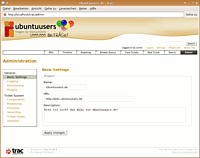

Trac
Dieser Artikel wurde für die folgenden Ubuntu-Versionen getestet:
Ubuntu 16.04 Xenial Xerus
Ubuntu 14.04 Trusty Tahr
Zum Verständnis dieses Artikels sind folgende Seiten hilfreich:
Trac  ist eine in Python geschriebene, webbasierte Anwendung, welche besonders bei Softwareentwicklern beliebt ist. Das Programm bietet unter einer integrierten Oberfläche ein Ticketsystem, ein Wiki sowie eine Quellcodeverwaltung. Es arbeitet mit Subversion, Mercurial und - ab Version 1.0 - Git zusammen. Trac lässt sich über Plugins jedoch auch für andere Versionskontrollsysteme erweitern.
ist eine in Python geschriebene, webbasierte Anwendung, welche besonders bei Softwareentwicklern beliebt ist. Das Programm bietet unter einer integrierten Oberfläche ein Ticketsystem, ein Wiki sowie eine Quellcodeverwaltung. Es arbeitet mit Subversion, Mercurial und - ab Version 1.0 - Git zusammen. Trac lässt sich über Plugins jedoch auch für andere Versionskontrollsysteme erweitern.
Das Programm bietet verschiedene Übersichten und Auswertungsmöglichkeiten zum Status der Tickets sowie der Historie der Versionskontrolle. Weiterhin bietet Trac eine recht fein konfigurierbare Benutzerrechteverwaltung. Es wird per Voreinstellung SQLite als Datenbank im Hintergrund genutzt, grundsätzlich besteht aber auch die Möglichkeit, auf MySQL oder PostgreSQL umzustellen, was aber nur bei großen Projekten wirklich notwendig ist.
Grundsätzlich ist der Einsatz von Trac aber nicht auf die Softwareentwicklung beschränkt. So ist z.B. das Ticketsystem recht flexibel konfigurierbar und kann somit auch für andere Anwendungsfälle genutzt werden. Weiterhin kann man den Versionskontrollteil komplett deaktivieren, sodass man nur ein Wiki plus Ticketsystem hat.
Trac kann im standalone-Modus betrieben werden, d. h. dass der eingebaute Server zum Ausliefern der Seiten genutzt wird. Dies ist für kleinere Installationen völlig ausreichend, es besteht aber natürlich auch die Möglichkeit, die Software in echte Webserver, wie z.B. Apache, einzubinden.
Trac ist zwar einfach zu nutzen, hat aber umfangreiche Konfigurationsmöglichkeiten, von denen hier nur einige grundlegende Schritte beschrieben werden. Das Trac Open Source Project ist eine weitergehende und sehr detaillierte Dokumentation.
Installation¶
Trac besitzt zur Zeit (Stand: Februar 2017) drei unterstützte Versionen: 0.12 LTS, 1.0. und die aktuelle Version 1.2.
über die Paketquellen¶
Trac ist in den Ubuntu-Quellen enthalten und kann über das Paket
trac (universe)
 mit apturl
mit apturl
Paketliste zum Kopieren:
sudo apt-get install trac
sudo aptitude install trac
installiert werden [1].
Diese Installationsart ist jedoch nur für den lokalen oder Testbetrieb zu empfehlen, da die Version aus den Quellen (Trusty: 1.0.1, Xenial: 1.0.9) nicht unbedingt die neuste Version ist und vor allem nicht immer alle Sicherheitsupdates enthält. Für produktive Anwendungen ist die manuelle Installation zu empfehlen.
manuelle Installation¶
Trac läuft aktuell nur mit Python 2 in der Version 2.7 und 2.6. Die manuelle Installation kann via pip erfolgen[2]:
pip install trac
Ist eine systemweite Installation gewünscht, ist der Befehl mit Root-Rechten[5] aufzurufen.
Weitere Installationsmethoden siehe Trac Installation Guide .
Grundlegende Konfiguration¶
Zuerst muss eine Projektumgebung, das "Environment", angelegt werden. Sie darf grundsätzlich in jedem beliebigen Verzeichnis liegen. Zu beachten ist aber, dass Trac später unter einem Benutzer gestartet wird, der auch Schreib- und Leserechte im Projektverzeichnis haben muss. Zum lokalen Testen kann man die Umgebung ohne weiteres im eigenen Homeverzeichnis installieren, will man Trac aber im Internet betreiben, so empfiehlt sich z.B. ein Projektverzeichnis unterhalb von /var/www bzw. /var/www/html
Projekt anlegen - Homeverzeichnis¶
Möchte man Trac testen (oder als rein privates Wiki oder Ticketsystem nutzen), so kann man die Projektumgebung ohne weiteres im Homeverzeichnis anlegen. Der Befehl [2] lautet:
trac-admin ~/tractest initenv
So wird im Homeverzeichnis das Unterverzeichnis tractest angelegt und alle für Trac notwendigen Daten werden dort hinterlegt.
Zuerst gibt man bei der Installation einen Namen für das Projekt an. Dann wird nach der Verbindung zur Datenbank gefragt. Sofern man die vorgegebene Datenbank SQLite verwenden möchte - wogegen nichts spricht - bestätigt man den Vorgabewert. Darauf wird die Umgebung komplett angelegt.
Das Projekt kann jetzt über den Aufruf von
tracd --port 8000 ~/tractest
und von http://localhost:8000/tractest im Browser genutzt werden. Der Port kann beliebig gewählt werden, sofern auf dem Port kein anderen Dienst läuft und ein unprivilegierter Port größer 1024 genutzt wird.
Man kann das Programm auch im Daemon-Mode starten, in dem man zusätzlich die Option -d nutzt. Damit läuft die Software automatisch im Hintergrund und blockiert weder den Shellprompt noch werden Meldungen von Trac ausgegeben.
Um den Trac-Server wieder zu stoppen kann man folgenden Befehl nutzen:
sudo killall tracd
Trac und das Projekt laufen jetzt zwar, da allerdings kein Benutzer angelegt ist, kann auf alle Seiten nur lesend zugegriffen werden. Informationen zum Anlegen von Nutzern findet man im Abschnitt Benutzer anlegen.
Projekt anlegen - Server¶
Das Anlegen eines Projekts für einen (öffentlichen) Server läuft ähnlich, benötigt aber einige wenige Schritte mehr, da Rechte angepasst werden müssen[4].
Im folgendem Beispiel wird dazu Trac im Verzeichnis /var/www/trac eingerichtet:
#Anlegen der Projektumgebung sudo trac-admin /var/www/trac initenv #Ändern der Dateirechte sudo chown -R www-data /var/www/trac #Starten des Standalone Servers sudo su www-data -c "tracd --port 8000 /var/www/trac"
Nun sollte der Trac Standalone-Server im Webbrowser unter der Adresse http://localhost:8000 erreichbar sein. Natürlich kann auch hier Trac über die Option -d im Hintergrund laufen, der Befehl zum Stoppen des Servers ist der gleiche wie bei der Installation im Homeverzeichnis.
Anbindung an Webserver¶
Trac kann natürlich nicht nur über den eingebauten Standalone-Server betrieben werden, sondern auch an einen richtigen Webserver gebunden werden. Dies ist besonders für größere Projekte empfehlenswert.
Trac erlaubt den Betrieb Apache/Mod wsgi - der gängigsten Methode für Python - aber auch das ältere via CGI oder FastCGI. Informationen hierzu findet man in der Dokumentation im Abschnitt Running Trac on a Web Server .
Benutzer anlegen¶
Um mit Trac aktiv arbeiten zu können, also um Tickets zu erstellen oder Wikieinträge zu bearbeiten, muss man sich als Nutzer anmelden und mit den entsprechenden Rechten ausgestattet sein. Per Voreinstellung ist nach dem Anlegen einer Projektumgebung kein Benutzer angelegt, dies muss von Hand erfolgen.
Hinweis:
Die folgenden Schritte gelten nur für den Trac Standalone-Server. Nutzt man Trac über einen Server via mod_wsgi oder (Fast-) CGI: siehe entsprechende Anleitungen in Anbindung an Webserver.
Zuerst ist eine Passwortdatei anzulegen. Falls ein Apache-Webserver installiert ist, kann man dies einfach über das Programm htpasswd erledigen:
sudo htdigest -c /var/www/tractest/.htpass REALM NUTZER
Um weitere Benutzer anzulegen die Option -c streichen, da sonst die Datei überschrieben wird.
sudo htpdigest /var/www/tractest/.htpass REALM NUTZER
REALM kann prinzipiell beliebig gewählt werden, sollte aber für alle späteren Trac-Benutzer einheitlich sein, da der REALM beim Login ebenfalls verglichen wird.
Wer Apache und somit auch htdigest nicht installiert hat, kann die Passwortdatei auch mit Script Generating Passwords Without Apache anlegen.
Jetzt muss man nur noch Trac mit Authentifizierung starten:
tracd --port 8000 --auth "tractest,/var/www/tractest/.htpass,REALM" /var/www/tractest/
Wichtig ist dabei, dass REALM der gleiche ist wie in der Datei .htpass angelegt, sonst funktioniert der Login nicht. Einloggen kann man sich nach dem Start von Trac mit  auf "Login" im Menü rechts oben.
auf "Login" im Menü rechts oben.
Benutzerrechte vergeben¶
Um einen Benutzer mit entsprechenden Rechten auszustatten dient das Programm trac-admin, welches zusammen mit Trac installiert wird. Das Programm dient auch zur generellen Verwaltung einer Trac-Installation, siehe unten.
Trac besitzt eine feingranulare Rechteverwaltung, man kann Rechte für Wiki, Ticketsystem und Versionskontrolle getrennt und mehrstufig pro Nutzer vergeben. Man sollte aber zumindest einen Benutzer mit Admin-Rechten anlegen. Dies erledigt der folgende Befehl:
sudo trac-admin /var/www/tractest permission add NUTZERNAME TRAC_ADMIN
Damit wird für das Projekt, welches unter /var/www/tractest für den Nutzer NUTZERNAME angelegt ist, das volle Admin-Recht gewährt. Liegt das Projekt innerhalb des eigenen Homeverzeichnisses, so kann man dem Befehl sudo weglassen. Meldet sich dieser Nutzer nun an, so hat er alle Rechte innerhalb des Projekts. Analog kann man natürlich für alle anderen, niedrigeren Rechte verfahren. Dabei können auch mehrfach verschiedene Rechte pro Nutzer vergeben werden. Vollständige Übersicht über die Rechte, siehe Seite Trac Permissions .
Trac verwalten und konfigurieren¶
Zur Verwaltung eines Trac-Projekts dient in erster Linie das mit installierte Programm trac-admin. Die allgemeine Syntax lautet:
trac-admin /Pfad/zur/Installation/Projekt BEFEHL PARAMETER OPTIONEN
PARAMETER und OPTIONEN können je nach BEFEHL variieren. Ein Beispiel findet man im vorherigen Abschnitt Benutzerrechte vergeben, eine umfassende Befehlsreferenz in TracAdmin .
Neuplatzierung vom SVN-Verzeichnis¶
Sollte es notwendig sein, das SVN-Verzeichnis im Dateisystem zu verschieben, muss Trac resynchronisiert werden. Die Syntax lautet:
sudo trac-admin /pfad/zum/trac/verzeichnis/ repository resync '(default)'
Der Befehl sudo wird hier für die Berechtigung benötigt, falls das SVN-Verzeichnis, z. B. des Besitzers, "www-data" hat.
Der Name des Repository ist der trac.ini Datei zu entnehmen. Im Abschnitt "[trac]" und Parameter "repository_sync_per_request" ist dieser Wert zu suchen:
1 2 3 4 | [trac] ... repository_sync_per_request = (default) ... |
Verwaltung mit graphischer Oberfläche¶
Einen Teil der Konfiguration kann man auch über die Oberfläche von Trac erledigen. Ist man als Benutzer mit Admin-Rechten angemeldet, so sieht man ganz rechts im Menü den Punkt "Admin" - führt zum Konfigurationsmenü, wo u.a. Benutzerrechte angelegt, das Ticketsystem angepasst sowie die Versionskontrolle eingerichtet werden können.
Datei trac.ini¶
Globale Einstellungen für Trac werden zentral in der Datei trac.ini hinterlegt. Diese Datei findet man im Projektverzeichnis im Order conf. Die Datei kann mit einem beliebigen Editor bearbeitet werden [3]. Da die Datei an sich nicht kommentiert ist, sollte man vorher The Trac Configuration File lesen. Einige Beispiele findet man auch im folgenden Abschnitt.
Design-Anpassung¶
|  |
| TracWebAdmin im Ubuntuusers-Design |
Auf der Projektseite Trac Hacks ist ein Plugin für Themes zu finden. Folgend wird jedoch lediglich die manuelle Anpassung erläutert, was Kenntnisse über Cascading Style Sheets erfordert.
Um für mehrere Trac-Instanzen unterschiedliche Designs zu nutzen und damit bei einem Trac-Update die Änderungen nicht verloren gehen, wird ein eigenes Verzeichnis für das Trac-Theme angelegt und in der Trac-Konfiguration der einzelnen Instanz bekanntgegeben.
Logo und Favicon¶
Das eigene Logo mylogo.png und das Icon myicon.ico werden entweder in den Ordner /usr/share/trac/htdocs oder in den /htdocs-Ordner der betreffenden Instanz kopiert. Die Namen müssen in der Datei /var/trac/wiki/conf/trac.ini an entsprechender Stelle angepasst werden [3]. Hat man seine Dateien in den allgemeinen Ordner kopiert, gibt man src=common/... an, wenn man sie in den Ordner der Instanz kopiert hat, muss man src=site/... schreiben. Letztere Version ist günstiger, wenn man ein Update des Systems durchführt, da bei src=common/... die Dateien im allgemeinen Verzeichnis möglicherweise gelöscht werden können.
1 2 3 4 5 | [header_logo] src = common/mylogo.png ... [project] icon = common/myicon.ico |
CSS und Symbole¶
Da sich anbietet die vorhandenen Stylesheets und Symbole als Grundlage für eigene Anpassungen zu nutzen, wird der Ordner als Kopie für das Projekt gespeichert, die über den Webserver verfügbar ist [2].
sudo cp -r /usr/share/trac/htdocs /var/www/trac-theme sudo chown -R www-data /var/www/trac-theme
Der Pfad muss im entsprechenden Abschnitt der /var/trac/wiki/conf/trac.ini bekannt gegeben werden [3].
1 2 | [Trac] htdocs_location = http://localhost/trac-theme/htdocs |
Designänderungen (CSS und Symbole) werden von nun an für dieses Projekt an den Dateien im Ordner /var/www/trac-theme bzw. dessen Unterordnern vorgenommen (ausgenommen Logo und Favicon).
Header und Footer¶
Auch Header und Footer, also die Anfangs- und Endbereiche, die bei allen Seiten gleich sind, können angepasst werden. Hierzu wird zunächst das Verzeichnis /usr/share/trac/templates mit den vorhandenen Vorlagen aus Trac in das Beispielprojekt kopiert [2].
sudo cp -r /usr/share/trac/templates /var/www/trac-theme
Der Pfad muss im entsprechenden Abschnitt der /var/trac/wiki/conf/trac.ini bekannt gegeben werden [3].
1 2 | [Trac] templates_dir = /var/www/trac-theme/templates |
Ergänzungen an Header und Footer können nun an den Dateien site_header.cs und site_footer.cs vorgenommen werden. Änderungen an den bestehenden Inhalten werden in den Dateien header.cs und footer.cs gemacht.
Plugins¶
Trac ist über Plugins erweiterbar. Plugins können z.B. recht einfach über das "Admin" Menü installiert und danach in der Datei trac.ini aktiviert werden. Allgemeine Informationen findet man in Trac plugins , eine Auswahlliste in Trac Plugins List . Des Weiteren gibt es auf der Seite Trac Hacks eine sehr große Auswahl von Plugins von nicht dem Projekt angehörigen Programmierern.
Hinweis:
Vor der Installation eines Plugins sollte man unbedingt darauf achten, ob das Plugin für die eigene Trac-Version geeignet ist, sonst kann es zu unerwarteten Resultaten kommen. Gerade auf der Seite Trac Hacks gibt es ein Vielzahl von Plugins, welche nur mit einer bestimmten Trac-Version laufen.
Plugins bei Installation aus den Quellen¶
Hat man Trac über die Ubuntu-Paketquellen installiert, so sind darüber auch einige Plugins installierbar. Die Pakete haben alle das Namensschema trac-*.
Backup¶
Über das oben genannten trac-admin lassen sich auch Sicherungen des Projekts anlegen. Dies geschieht über den Befehl:
sudo trac-admin /Pfad/zum/Projekt/Projektname hotcopy /Pfad/zum/Sicherungsverzeichnis
Möchte man eine Sicherung zurückspielen, muss man zuerst Trac bzw. den Server stoppen und dann einfach alle Dateien aus dem Sicherungsverzeichnis ins Projektverzeichnis zurückkopieren.
Hinweis:
Dies funktioniert nur, wenn man SQLite als Datenbank benutzt. Beim Einsatz einer anderen Datenbank muss man diese separat sichern. Weitere Hinweise findet man in Trac Backup .
Schwierigkeiten unter AMD64¶
Falls Python den Fehler meldet, ClearSilver sei nicht installiert, kann folgendes ClearSilver-Paket für AMD64  helfen. Es handelt sich bei der Fehlermeldung um einen bekannten Fehler.
helfen. Es handelt sich bei der Fehlermeldung um einen bekannten Fehler.
Hinweis!
Fremdpakete können das System gefährden.
- Erstellt mit Inyoka
-
 2004 – 2017 ubuntuusers.de • Einige Rechte vorbehalten
2004 – 2017 ubuntuusers.de • Einige Rechte vorbehalten
Lizenz • Kontakt • Datenschutz • Impressum • Serverstatus -
Serverhousing gespendet von